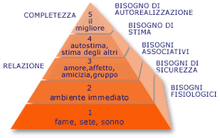

Una comunità coerente, punta al raggiungimento di un obiettivo preciso nella vita dei partecipanti e risponde alle mete fondamentali stabilite dai fondatori, quindi indipendentemente dai motivi per i quali una comunità online possa vedere la luce, che si tratti di creare una nuova organizzazione sul Web oppure di ridefinirne una già esistente ogni partecipante si riterrà soddisfatto quando l'obiettivo di fondo viene definito con chiarezza. Definiti gli obiettivi iniziali, con la crescita e la maturazione della comunità, i vari membri possono e dovrebbero giocare un ruolo progressivamente più ampio nella realizzazione e nel mantenimento della cultura interna.
Ciascuna comunità può definirsi riuscita o meno, a seconda dell'idea di successo che hanno quanti creano, gestiscono e danno vita
a quel gruppo specifico. Un gruppo qualsiasi, può contare anche solo una dozzina di iscritti, che peraltro ritengono di aver
raggiunto il successo perché quell'esperienza risponde alle loro esigenze e aspettative; come d'altra parte un portale Web può essere in
grado di attrarre migliaia di membri e stimolare un robusto contesto sociale, pur essendo costretto a chiudere per non aver
raggiunto gli obiettivi fissati dagli sponsor.
Per poter esistere e avere senso, una comunità deve attrarre e mantenere un numero sufficiente di membri. deve garantire adeguati ritorni
economici o non profit a chiunque vi abbia investito per avviarla e mantenerla, é però importante essere chiari sulla natura dell'investimento
come pure sul tipo di ritorno che ci si aspetta. Nel caso in cui entrambi i requisiti non vengano rispettati, la comunità si avvierà alla sua chiusura.
Dal punto di vista del design, uno degli errori che si possono commettere, consiste nell'organizzare un megaprogetto iniziale e nell'operare pesanti investimenti in paradigmi di design o piattaforme tecnologiche che poi risulta difficile modificare e aggiornare. Quasi sempre le comunità durature e di successo partono con progetti ristretti, semplici e mirati per poi crescere in maniera organica con l'andar del tempo, ampliandosi in respiro, profondità e complessità come risposta alle mutevoli esigenze del tempo e alle diverse variabili ambientali.
I principali interrogativi da porsi in sede di progettazione per la formulazione degli obiettivi sono:
- quale tipo di comunità si vuole realizzare
- per quale motivo lo si sta facendo
- per chi? committente/utente
Occorrerà porsi questi quesiti con una certa periodicità, al ritmo delle mutevoli esigenze di utenti e proprietari.
Un buon punto di inizio, consiste nell'identificare le esigenze ancora insoddisfatte condivise dai membri della comunità
e del tutto specifiche.
Per meglio ponderare la questione, uno strumento molto utile a cui far riferimento potrebbe essere la scala di Maslow:
La teoria di Maslow spiega la motivazione in base alla soddisfazione sequenziale di alcuni bisogni tra loro in rapporto gerarchico:
fisiologici, di sicurezza, di appartenenza, di affetto e di stima, di autorealizzazione.
Secondo Maslow si potrà soddisfare il bisogno successivo solo dopo aver soddisfatto quello precendete, per quanto in alcuni aspetti
si tratti di uno schema riduttivo, la sua semplicità la rende sovente uno strumento efficace.
Ami Jo Kim, ne ha realizzato una tassonomia per l'utente online

http://www.naima.com/community , La pubblicazione di Ami Jo Kim